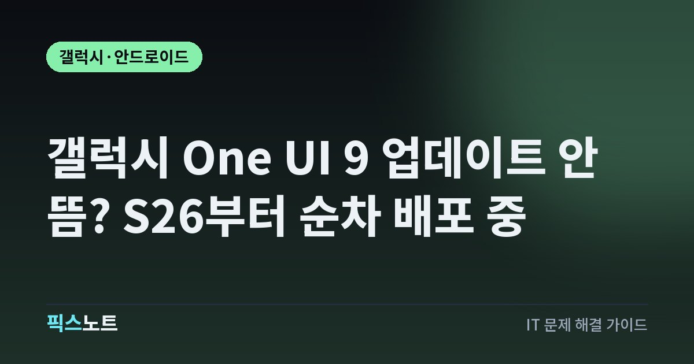

갤럭시 One UI 9 업데이트 안 뜸? S26부터 순차 배포 중
One UI 9 업데이트가 보이지 않을 때 국내 배포 순서와 기기·통신사별 차이, 확인 방법을 정리합니다.

다른 사람이 One UI 9을 받았는데 내 갤럭시에는 업데이트가 안 뜬다고 해서 바로 오류는 아니에요. 삼성전자는 2026년 9월 16일 국내에서 갤럭시 S26 시리즈부터 정식 업데이트를 시작했고 지원 기기를 순차 확대한다고 밝혔습니다. 먼저 내 기기가 아직 배포 순서에 들어오지 않은 건 아닌지 확인해 보세요.
1. 국내 One UI 9은 S26 시리즈부터 시작됐어요
삼성전자 뉴스룸 코리아는 One UI 9 정식 버전 업데이트를 2026년 9월 16일 국내에서 시작했고 Galaxy S26 시리즈부터 적용한 뒤 지원 기기를 차례로 넓혀갈 계획이라고 밝혔어요. 글로벌 공지도 같은 날 S26, S26+, S26 Ultra부터 배포를 시작한다고 설명합니다. 따라서 ‘내 모델이 앞으로 지원된다’는 사실과 ‘오늘 내 기기에 업데이트가 표시된다’는 것은 다른 얘기예요. 온라인에서 같은 모델의 업데이트 인증 글을 봤더라도 내 통신사나 펌웨어 배포 시점이 다를 수 있습니다.
- 현재 기종과 모델명을 정확히 확인해요.
- 이미 One UI 9이 출고 탑재된 모델인지 업데이트 대상인지 구분해요.
- 같은 모델 사용자의 화면만 보고 내 기기 오류라고 판단하지 말아요.
2. 같은 모델도 통신사와 네트워크에 따라 차이가 날 수 있어요
삼성의 One UI 9 지원 문서는 사용할 수 있는 기능과 업데이트 경험이 기기, 통신사, 네트워크에 따라 달라질 수 있다고 안내합니다. 소프트웨어 업데이트는 국가와 통신사, 모델별 펌웨어 준비 상태에 따라 표시 시점이 다를 수 있으므로 다른 나라나 다른 통신사 사용자의 배포 화면과 바로 비교하기 어려워요. 자급제와 통신사 모델의 시점도 항상 같다고 단정할 수 없습니다. 커뮤니티에서 ‘오늘 전부 풀렸다’는 말을 봤더라도 공식 공지와 내 기기의 업데이트 화면을 함께 보는 게 필요해요. 삼성전자의 국내 공식 발표는 S26 시리즈부터 시작해 지원 기기를 차례로 넓힌다는 수준이므로 특정 미지원 날짜를 임의로 정해 기다리지는 않는 편이 좋습니다.
3. 업데이트 확인은 설정의 소프트웨어 업데이트에서 해요
삼성 공식 지원 문서는 One UI 9 사용 가능 여부를 설정의 Software Update 메뉴에서 Check for updates로 확인하도록 안내합니다. 국내 기기에서는 소프트웨어 업데이트 또는 시스템 업데이트에 해당하는 항목을 찾으면 돼요. 메뉴 이름은 기기와 소프트웨어 버전, 통신사에 따라 조금 다를 수 있으므로 화면에 보이는 항목을 기준으로 확인하는 게 안전합니다.
- 설정을 열어요.
- 아래로 내려 소프트웨어 업데이트 또는 시스템 업데이트 항목을 열어요.
- 업데이트 확인에 해당하는 항목을 눌러 새 버전이 있는지 확인해요.
- 업데이트가 보이면 화면 안내에 따라 내려받고 설치해요.
한 번 확인했는데 없다고 반복해서 재부팅하거나 초기화할 필요는 없습니다. 서버에서 내 모델용 업데이트가 아직 열리지 않았다면 설정을 초기화해도 배포 일정이 앞당겨지는 것은 아니에요.
4. 안 뜬다고 공장 초기화부터 하면 손만 더 가요
순차 배포 중인 업데이트는 공장 초기화를 했다고 서버에서 내 기기용 펌웨어가 더 빨리 열리는 방식이 아닙니다. 삼성 공식 문서도 업데이트가 보이지 않을 때 현재 소프트웨어 버전을 확인하고 통신사별 업데이트 정보와 기기의 업데이트 확인 기능을 사용하도록 안내해요. 초기화는 개인 데이터와 앱, 설정을 다시 구성해야 하는 큰 작업이므로 배포 시점 확인만을 위해 할 이유가 없습니다.
- 설정의 휴대전화 정보 또는 태블릿 정보에서 현재 소프트웨어 정보를 확인해요.
- 소프트웨어 업데이트 화면에서 새 버전을 다시 확인해요.
- 통신사 모델이면 통신사 지원 페이지의 업데이트 이력도 확인해요.
- 공식 배포 대상인데 장기간 전혀 보이지 않거나 다운로드가 계속 실패할 때 삼성 지원에 문의해요.
5. 설치 전에는 백업과 네트워크를 준비해요
삼성의 소프트웨어 업데이트 안내는 시스템 업데이트 중에는 기기를 사용할 수 없고 파일 접근이나 통화가 제한될 수 있다고 설명해요. 중요한 자료는 미리 백업하고 충분한 배터리와 안정적인 네트워크를 확보한 뒤 진행하는 편이 좋습니다. 일부 통신사는 Wi-Fi 연결을 요구할 수 있고 업데이트 과정에서 기기가 재시동됩니다. 큰 버전 업데이트는 설치 직후 앱 최적화나 백그라운드 작업이 이어질 수 있으므로 설치 직후의 일시적인 발열이나 배터리 사용만으로 업데이트 자체가 실패했다고 판단하지 않는 편이 좋아요.
- 사진·연락처·문서의 백업 상태를 확인해요.
- 배터리를 충분히 충전하고 안정적인 Wi-Fi에 연결해요.
- 통화나 업무가 필요한 시간은 피해서 설치해요.
- 설치가 끝난 뒤 현재 One UI 버전과 주요 앱 동작을 확인해요.
6. 계속 실패하면 Smart Switch와 공식 지원을 활용해요
삼성 공식 소프트웨어 업데이트 문서는 Windows PC나 Mac의 Smart Switch에서도 연결된 Galaxy 기기의 업데이트를 확인할 수 있다고 안내합니다. USB 케이블로 기기를 연결하고 Smart Switch가 인식하면 사용 가능한 업데이트가 있을 때 Update 항목을 선택할 수 있어요. 다만 이 방법이 아직 배포되지 않은 One UI 9을 강제로 받게 해 주는 것은 아닙니다. 기기 자체 업데이트 화면이 이상하거나 다운로드가 계속 실패할 때 보조 경로로 쓰는 게 적절해요.
- 공식 Smart Switch를 PC나 Mac에 설치해요.
- USB 케이블로 갤럭시를 연결하고 기기 인식을 확인해요.
- 업데이트가 표시되면 안내에 따라 진행해요.
- 업데이트가 없으면 모델명, 통신사 또는 자급제 여부, 현재 소프트웨어 버전, 업데이트 화면 문구를 정리해 Samsung Members나 공식 고객지원에 문의해요.
자주 묻는 질문
One UI 9 업데이트가 안 뜨면 제 폰은 지원하지 않는 건가요?
그렇게 단정할 수 없어요. 삼성전자는 S26 시리즈부터 시작해 지원 기기를 순차 확대한다고 밝혔고, 업데이트 표시 시점은 기기·통신사·네트워크 등에 따라 달라질 수 있습니다.
한국 One UI 9 정식 업데이트는 언제 시작됐나요?
삼성전자 뉴스룸 코리아 기준으로 2026년 9월 16일 국내에서 정식 업데이트가 시작됐습니다. 최초 적용은 Galaxy S26 시리즈이며 이후 지원 기기를 차례로 확대하는 방식입니다.
One UI 9이 안 뜨면 공장 초기화를 해야 하나요?
업데이트가 순차 배포 중이라면 초기화로 배포 시점을 앞당길 수 없습니다. 먼저 설정의 소프트웨어 업데이트에서 확인하고 통신사·모델별 배포 상황을 확인하는 게 우선이에요.
Smart Switch로 One UI 9을 더 빨리 받을 수 있나요?
Smart Switch는 PC나 Mac에서 사용 가능한 공식 업데이트를 설치하는 보조 경로입니다. 내 모델과 지역에 아직 업데이트가 배포되지 않았다면 미배포 펌웨어를 강제로 제공하는 기능은 아닙니다.